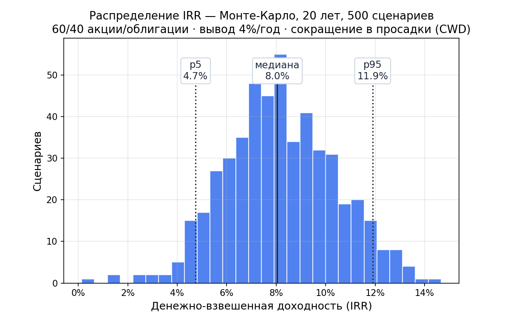

инвестиционная аналитика для ИИ-ассистентов — бесплатно и open source
Вы
Что будет с портфелем 60/40 при выводе 4% в год,
если сокращать вывод в просадки? Покажи IRR.
ИИ-ассистент · via okama-mcp
В 500 сценариях Монте-Карло медианная доходность с учётом изъятий —
8,0% годовых; 90% исходов — между 4,7% и 11,9%.
Сокращение вывода в просадки удерживает даже худшие сценарии
в плюсе →

$ uvx okama-mcp stdio
47 инструментов · бэктесты · Монте-Карло · граница эффективности · графики
Работает с Claude Desktop, Claude Code, Cursor, Codex — любым MCP-клиентом